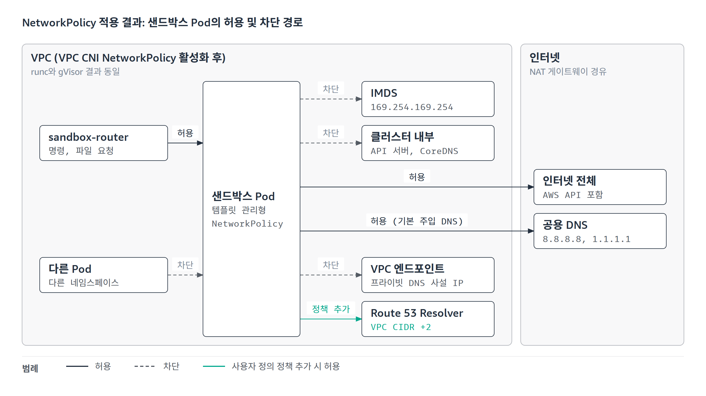
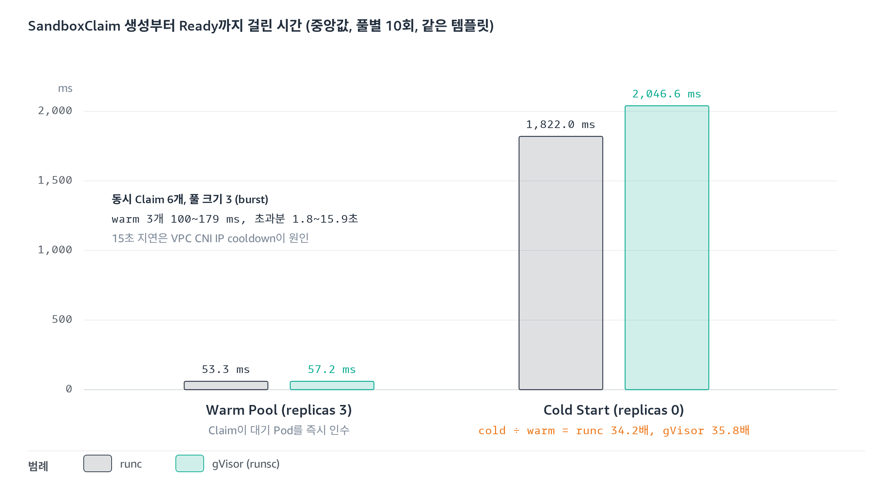
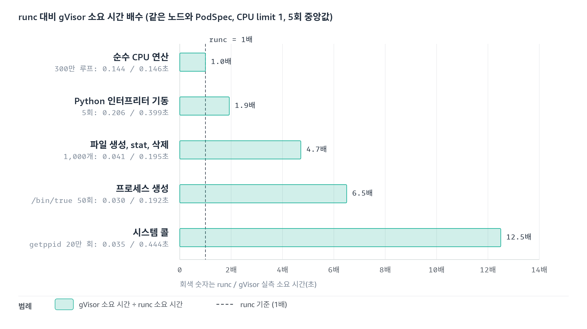
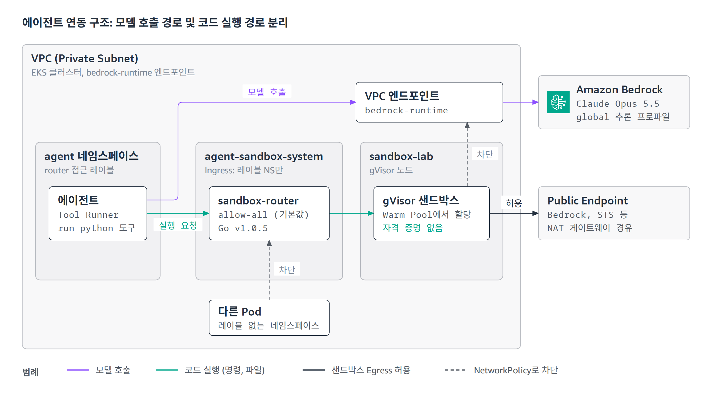

Amazon EKS에서 Agent Sandbox와 gVisor로 만든 격리를 운영 환경에 올리려면 무엇을 더 확인해야 하는지 답합니다. VPC CNI에서 NetworkPolicy를 활성화해야 정책이 동작하며 기본 정책은 인터넷으로 나가는 경로를 열어 두므로 Egress 통제를 따로 설계해야 합니다. gVisor는 시스템 콜이 많은 작업을 2~12배 느리게 하지만 Warm Pool을 사용하면 Claim부터 Ready까지가 약 57 ms로 줄어 런타임 차이가 사라집니다.This post answers what else you need to check before you take the isolation built with Agent Sandbox and gVisor on Amazon EKS to production. The policy works only after you enable NetworkPolicy in VPC CNI, and the default policy leaves the path to the internet open, so egress control must be designed separately. gVisor makes work with many system calls 2 to 12 times slower, but with a warm pool the time from Claim to Ready drops to about 57 ms and the runtime difference disappears.
1부에서는 Kubernetes SIG Apps의 Agent Sandbox v1.0.5를 Amazon EKS 1.36 클러스터에 gVisor와 함께 구성했습니다. 신뢰할 수 없는 코드를 막는 4개 격리 계층을 구성한 뒤 그중 Pod 보안 설정과 gVisor 계층을 확인했습니다.
나머지 NetworkPolicy와 전용 노드 그룹의 IMDS 설정은 2부 1파트에서 확인합니다. 2부에서는 이 구성을 운영 환경에 올릴 때 확인해야 할 내용을 다룹니다. NetworkPolicy와 DNS 경로, Warm Pool과 Pod IP, gVisor의 성능 비용, 샌드박스 수명 주기, 그리고 에이전트 연동과 sandbox-router 보안입니다.
테스트 환경은 1부와 같습니다. EKS 1.36 클러스터에 gVisor 전용 노드 그룹(m7i.xlarge × 2)을 추가하고 Agent Sandbox 컨트롤러와 Go 구현의 sandbox-router를 설치했습니다. 이 상태에서 runc 샌드박스와 gVisor 샌드박스를 비교했습니다.
시리즈 블로그 보기
01
SandboxTemplate은 사용자가 정책을 지정하지 않으면 보안 기본 정책을 만듭니다. Ingress는 agent-sandbox-system 네임스페이스의 sandbox-router에서 오는 트래픽만 허용합니다. Egress는 0.0.0.0/0에서 RFC 1918 사설 대역과 169.254.0.0/16을 뺀 Public IP로만 나갈 수 있습니다. 이 정책이 실제로 동작하는지 샌드박스 안에서 여러 목적지로 TCP 연결을 시도해 확인했습니다.
| 목적지 | 활성화 전 | 활성화 후 |
|---|---|---|
| AWS API Public Endpoint (443) | 연결됨 | 연결됨 |
| 인스턴스 메타데이터 서비스 (169.254.169.254) | 연결됨 | 차단 |
| Kubernetes API, CoreDNS, VPC DNS | 연결됨 | 차단 |
| 다른 샌드박스 Pod, router Pod | 연결됨 | 차단 |
| 다른 네임스페이스의 Pod에서 샌드박스로 | 연결됨 | 차단 |
| sandbox-router를 거친 샌드박스 호출 | HTTP 200 | HTTP 200 |
표 1. 템플릿 관리형 NetworkPolicy의 VPC CNI 활성화 전후 연결 결과 (runc와 gVisor 결과 동일, TCP 3초 시도 기준)
그림 1은 활성화 후 샌드박스 Pod를 기준으로 허용 경로와 차단 경로를 정리한 것입니다. DNS와 VPC 엔드포인트 경로는 이어지는 Route 53 Resolver 파트에서 다룹니다.

활성화 전에는 NetworkPolicy 객체가 있었는데도 샌드박스가 메타데이터 서비스와 Kubernetes API에 그대로 연결됐습니다. 정책을 노드 규칙으로 바꾸는 PolicyEndpoint가 하나도 없었기 때문입니다. 활성화 후에는 같은 정책이 문서대로 동작했고 gVisor Pod에도 동일하게 적용됐습니다. gVisor는 사용자 공간 네트워크 스택을 사용하지만 패킷은 결국 Pod의 네트워크 인터페이스를 지나고 VPC CNI는 노드에서 eBPF로 정책을 처리하므로 런타임과 관계없이 정책이 적용됩니다. 정책은 샌드박스 수와 상관없이 템플릿당 하나만 생성됐습니다.
EKS 문서의 주의 사항 하나는 검토가 필요합니다. VPC CNI의 기본 standard 모드에서는 새 Pod가 정책이 적용되기 전까지 모든 트래픽을 허용하는 상태로 시작합니다. 새 샌드박스 Pod가 시작 직후의 이 짧은 구간에도 차단된 상태로 있어야 한다면 NETWORK_POLICY_ENFORCING_MODE=strict를 검토하는 것을 권고합니다. strict 모드는 정책이 없는 Pod를 기본 차단하므로 CoreDNS를 포함한 클러스터 전체의 정책을 함께 준비해야 합니다.
기본 정책이 막는 것은 사설 대역과 링크 로컬 대역뿐이며 인터넷으로 나가는 연결은 모두 허용됩니다. 신뢰할 수 없는 코드가 인터넷 어디로든 나갈 수 있다는 뜻이므로 데이터 유출, 외부 C2 서버 접속, 채굴 같은 리소스 남용을 이 정책만으로는 막을 수 없습니다. 패키지 저장소처럼 꼭 필요한 목적지만 남기려면 사용자 정의 networkPolicy로 Egress 목적지를 제한하거나, 샌드박스 노드 서브넷의 기본 경로를 egress 프록시나 AWS Network Firewall로 보내야 합니다. 도메인 단위 허용 목록이 필요하면 Route 53 Resolver DNS Firewall을 사용할 수 있는데, 이어지는 Route 53 Resolver 구성이 그 전제입니다.
NetworkPolicy가 선택하지 않는 Sandbox(템플릿 없이 만든 core Sandbox)에서 메타데이터 서비스를 직접 시험했습니다. TCP 연결은 성공했지만 IMDSv2 세션 토큰을 받는 PUT 요청은 응답 없이 시간 초과됐고 IMDSv1 방식의 조회는 HTTP 401을 받았습니다. 시작 템플릿의 IMDSv2 필수 설정과 홉 제한 1이 NetworkPolicy와는 독립적으로 노드 IAM 역할의 자격 증명을 보호한 것입니다. runc와 gVisor의 결과는 같았습니다.
템플릿에 사용자 정의 networkPolicy가 없고 Pod 명세에 dnsPolicy를 지정하지 않으면 컨트롤러가 Pod에 dnsPolicy: None과 nameservers: ["8.8.8.8", "1.1.1.1"]을 주입합니다. 클러스터 내부 서비스 이름이 노출되지 않게 하려는 설계입니다. 그러나 AWS 환경에서는 샌드박스의 DNS 질의가 Route 53 Resolver를 거치지 않고 NAT 게이트웨이를 지나 공용 DNS로 나가게 됩니다. Route 53 Resolver DNS Firewall과 쿼리 로깅이 적용되지 않고 아웃바운드 53 포트를 막아 둔 VPC에서는 이름 해석 자체가 실패합니다.
템플릿에 정책을 직접 정의하면 DNS 주입이 비활성화되고 Pod에 지정한 DNS 설정이 그대로 유지됩니다. 아래 발췌는 DNS를 VPC의 Route 53 Resolver(VPC 기본 CIDR의 +2 주소)로만 보내고 나머지 IPv4 규칙은 기본 정책과 같게 둔 예입니다. 기본 정책의 IPv6 규칙은 IPv4 클러스터라서 생략했습니다.
spec:
networkPolicy:
ingress:
- from:
- namespaceSelector: {matchLabels: {kubernetes.io/metadata.name: agent-sandbox-system}}
podSelector: {matchLabels: {app: sandbox-router}}
egress:
- to: [{ipBlock: {cidr: 10.100.0.2/32}}] # Route 53 Resolver
ports: [{protocol: UDP, port: 53}, {protocol: TCP, port: 53}]
- to:
- ipBlock: {cidr: 0.0.0.0/0, except: [10.0.0.0/8, 172.16.0.0/12, 192.168.0.0/16, 169.254.0.0/16]}
podTemplate:
spec:
dnsPolicy: None
dnsConfig: {nameservers: [10.100.0.2], options: [{name: ndots, value: "1"}]}이 구성에서 공인 이름은 Route 53 Resolver로 해석됐고 클러스터 내부 이름은 해석되지 않았으며 메타데이터 서비스와 Kubernetes API는 계속 차단됐습니다. 다만 VPC에 프라이빗 DNS를 활성화한 인터페이스 VPC 엔드포인트가 있으면 sts나 bedrock-runtime 같은 서비스 이름이 엔드포인트의 사설 IP로 해석됩니다. 이 주소는 사설 대역을 제외한 Egress 규칙에 막힙니다. 샌드박스가 AWS API를 호출해야 한다면 엔드포인트 서브넷의 443 포트를 명시적으로 열어야 합니다. 반대로 샌드박스에 AWS 자격 증명을 주지 않는 설계라면 이 차단이 안전한 기본값이 됩니다. 다만 막히는 것은 VPC 엔드포인트의 사설 IP 경로뿐이고 같은 서비스의 Public Endpoint로 가는 경로는 NAT 게이트웨이를 거쳐 열려 있습니다. 테스트에서도 같은 Pod에서 STS VPC 엔드포인트의 사설 IP는 차단됐지만 공용 DNS로 얻은 STS Public IP로는 연결됐습니다.
02
런타임별 템플릿에 replicas: 3과 replicas: 0인 Warm Pool을 하나씩 붙이고 SandboxClaim 생성부터 Claim의 Ready 조건까지 걸린 시간을 측정했습니다. 풀 네 개를 번갈아 10회씩 측정했으며 매번 Warm Pool이 다시 채워진 상태에서 Claim을 생성했습니다.
| 풀 | 중앙값 | p90 | 평균 | 대기 Pod 인수 |
|---|---|---|---|---|
| gVisor Warm Pool | 57.2 | 76.1 | 60.4 | 10/10 |
| gVisor Cold Start | 2,046.6 | 2,553.8 | 2,090.8 | 0/10 |
| runc Warm Pool | 53.3 | 95.4 | 62.8 | 10/10 |
| runc Cold Start | 1,822.0 | 2,046.1 | 1,755.8 | 0/10 |
표 2. SandboxClaim 생성부터 Ready까지 걸린 시간 (단위 ms, 풀별 10회, p90은 inclusive 방식 분위수, VPC CNI NetworkPolicy 활성화 전 측정)
Warm Pool을 사용하면 Claim이 이미 Ready 상태인 대기 Pod를 인수하므로 약 2초가 약 55 ms로 줄었습니다. Cold Start 대비 runc는 34.2배, gVisor는 35.8배 빠릅니다. 런타임 차이는 Cold Start에서만 드러났고(중앙값 기준 약 225 ms) Warm Pool에서는 사실상 사라졌습니다. 표 2는 NetworkPolicy를 활성화하기 전에 측정한 값입니다. 활성화 후 SDK로 3회씩 다시 잰 값도 Warm Pool 59~156 ms, Cold Start 1.8~2.6초로 같은 자릿수였습니다. 다만 재측정은 SDK 처리 시간이 포함된 방식이라 표 2와 직접 비교할 수는 없습니다.

풀 크기를 넘는 동시 요청에서는 다른 문제가 보였습니다. 대기 Pod 3개인 풀에 Claim 6개를 동시에 생성하자 3개는 100~179 ms에 대기 Pod를 인수했지만 초과분 3개 중 2개는 약 15초가 걸렸습니다. 원인은 노드의 VPC CNI ipamd 로그에 있었습니다. 직전 측정에서 샌드박스 수십 개를 빠르게 만들고 지운 탓에, 사용 중인 IP는 7개뿐인데 삭제된 Pod의 IP 18개가 재사용 대기 시간(cooldown)에 묶여 있었습니다. VPC CNI는 v1.15.0부터 삭제된 Pod의 IP를 기본 30초(IP_COOLDOWN_PERIOD) 동안 재사용하지 않습니다. 대기 시간이 풀린 뒤 같은 burst를 반복하자 초과분은 2.1~3.0초로 일반적인 Cold Start 수준이었습니다. 생성과 삭제가 잦은 샌드박스 노드라면 Prefix Delegation (접두사 위임)으로 IP 할당 단위를 키우거나 WARM_IP_TARGET으로 여유 IP를 늘리면 됩니다. Warm Pool 크기는 평균 요청 수보다 피크 동시 요청 수에 맞춥니다.
03
같은 노드, 같은 PodSpec, CPU limit 1인 두 샌드박스에서 같은 마이크로 벤치마크를 5회씩 실행해 중앙값을 비교했습니다.
| 항목 | runc | gVisor | 배수 |
|---|---|---|---|
| 순수 CPU 연산 (300만 회 루프) | 0.144 | 0.146 | 1.0 |
getppid 시스템 콜 20만 회 | 0.035 | 0.444 | 12.5 |
| 파일 1,000개 생성, stat, 삭제 | 0.041 | 0.195 | 4.7 |
/bin/true 50회 실행 | 0.030 | 0.192 | 6.5 |
| Python 인터프리터 5회 기동 | 0.206 | 0.399 | 1.9 |

표 3. 같은 노드에서 측정한 소요 시간 (단위 초, 5회 중앙값, 배수는 gVisor ÷ runc)
gVisor의 비용은 시스템 콜 횟수에 비례합니다. 순수 연산은 차이가 없었고 시스템 콜 한 번의 비용은 약 0.18 µs에서 2.2 µs로 늘었습니다. 모델이 생성하는 데이터 분석 코드처럼 연산 위주인 작업은 손해가 거의 없습니다. 반면 파일 작업과 프로세스 생성은 4.7~6.5배 느렸는데 패키지 설치나 빌드가 이런 유형에 해당합니다. 절대값으로 보면 프로세스 하나를 실행하는 데 0.6 ms에서 3.8 ms로 늘어나는 수준입니다.
메모리는 kubelet이 집계한 working set 기준으로 runc 43 Mi, gVisor 57 Mi였습니다. 다만 호스트에서 잰 gVisor Pod의 Sentry와 Gofer 프로세스 RSS 합계는 약 120 MiB였습니다. 내역은 runsc-sandbox 72,596 KiB와 두 컨테이너의 runsc-gofer 24,756 KiB, 24,636 KiB입니다. kubelet 지표는 컨테이너 cgroup 기준이고 호스트 RSS는 런타임 프로세스와 공유 페이지까지 더한 값이라 집계 범위가 다릅니다. 노드 과밀을 막으려면 RuntimeClass의 overhead.podFixed로 이 차이를 스케줄러에 반영하고 memory 값은 이 규모에서 시작해 조정합니다.
04
에이전트 세션은 짧게 끝나기도 하고 며칠씩 유휴 상태로 남기도 합니다. Agent Sandbox는 만료와 일시 중지로 이 두 경우를 다룹니다. 만료는 shutdownTime에 만료 시각을, shutdownPolicy에 Delete나 Retain을 지정합니다. 일시 중지는 spec.operatingMode를 Suspended로 바꾸면 Pod가 삭제되고 Running으로 되돌리면 다시 생성됩니다. EBS 기반 시험을 위해 EBS CSI AddOn과 EKS Pod Identity 역할을 추가하고 암호화된 gp3 StorageClass를 만들었습니다. 그런 다음 volumeClaimTemplates로 작업 디렉터리를 EBS에 두는 Sandbox에서 파일을 쓰고 일시 중지와 재개를 거쳐 파일이 남아 있는지 확인했습니다.
| 시나리오 | 결과 |
|---|---|
Sandbox shutdownTime + shutdownPolicy: Delete | 만료 시각에 Sandbox와 Pod 삭제 (폴링 간격 2초 기준 오차 이내) |
Sandbox shutdownTime + shutdownPolicy: Retain | Pod와 Service만 삭제, Sandbox는 Ready=False (SandboxExpired)로 유지 |
SDK create_sandbox(shutdown_after_seconds=60) | Claim의 lifecycle에 Delete 정책과 만료 시각 기록, 만료 시 Claim과 Sandbox 삭제 |
operatingMode: Suspended (emptyDir) | 2.1초 후 Pod 삭제, podIPs 비움, 재개 2.2초, 파일 소실 |
operatingMode: Suspended (EBS gp3 PVC) | 1.7초 후 Pod 삭제, PVC는 Bound 유지, 재개 5.6초, 파일 보존 |
표 3. 만료와 일시 중지 시나리오별 결과 (gVisor 샌드박스 기준)
EKS에서 일시 중지는 Pod를 지우고 Sandbox 객체와 볼륨을 남기는 동작이며 메모리 상태는 보존하지 않습니다. 에이전트의 작업 디렉터리를 이어서 사용하려면 volumeClaimTemplates로 PVC를 붙여야 합니다. EBS를 사용할 때 확인할 점은 두 가지입니다. 드라이버의 노드 플러그인은 taint가 있는 gVisor 노드에도 배치돼야 하고 EBS 볼륨은 가용 영역에 묶이므로 재개되는 Pod는 볼륨과 같은 가용 영역의 gVisor 노드로만 갈 수 있습니다. 가용 영역마다 gVisor 노드 용량을 두어야 재개가 막히지 않습니다. Sandbox를 삭제하면 템플릿에서 만든 PVC가 삭제됐고 StorageClass의 reclaimPolicy가 Delete이므로 EBS 볼륨도 함께 삭제됩니다.
05
마지막으로 실제 에이전트를 연결했습니다. 에이전트는 Anthropic Python SDK의 Tool Runner로 run_python 도구 하나를 노출합니다. 모델이 작성한 코드는 워크스테이션에서 실행되지 않고 Warm Pool에서 할당받은 gVisor 샌드박스에서만 실행됩니다.
그림 4는 모델 호출 경로와 코드 실행 경로가 어떻게 나뉘는지 보여 줍니다. 에이전트는 VPC 엔드포인트로 Amazon Bedrock을 호출하고 모델이 만든 코드는 sandbox-router를 거쳐 샌드박스로만 전달됩니다. 샌드박스도 NAT 게이트웨이를 거쳐 Public Endpoint에 도달할 수 있으므로, 이 분리가 어느 계층에서 성립하는지는 아래에서 다룹니다.

# 발췌: SandboxClient 생성과 메시지 구성 등은 생략했습니다
from anthropic import AnthropicBedrock, BetaFallbackState, BetaRefusalFallbackMiddleware, beta_tool
client = AnthropicBedrock(aws_region="ap-northeast-2",
middleware=[BetaRefusalFallbackMiddleware([{"model": "global.anthropic.claude-opus-4-8"}])])
sandbox = SandboxClient(connection_config=SandboxLocalTunnelConnectionConfig()).create_sandbox(
warmpool="python-gvisor-warm", namespace="sandbox-lab", shutdown_after_seconds=1800)
@beta_tool
def run_python(code: str) -> str:
"""Run a complete Python 3 program inside the isolated sandbox and return its output."""
sandbox.files.write("main.py", code)
r = sandbox.commands.run("python3 main.py", timeout=120)
return f"exit_code={r.exit_code}\n{r.stdout[-8000:]}\n{r.stderr[-4000:]}"
with BetaFallbackState():
for message in client.beta.messages.tool_runner(
model="global.anthropic.claude-opus-5-5", max_tokens=16000,
output_config={"effort": "medium"}, tools=[run_python], messages=[...]):
...에이전트에게 Warm Pool 측정 원본(JSON Lines)을 샌드박스에 올려 풀별 통계를 계산하게 했습니다. 샌드박스 할당은 0.08초, 모델 호출 4회, 샌드박스 실행 3회, 전체 33.2초였습니다. 두 번째 실행은 이전 실행의 변수를 가정한 코드라 오류(exit_code=1)로 끝났는데, 모델이 오류 출력을 읽고 세 번째 실행에서 프로그램 전체를 다시 작성했습니다. 에이전트가 낸 중앙값, p90, 평균, 배율 값은 샌드박스 밖에서 다시 계산한 값과 모두 일치했습니다.
테스트는 서울 리전 bedrock-runtime의 global 추론 프로파일을 사용했습니다. 테스트 VPC에는 bedrock-runtime 인터페이스 VPC 엔드포인트가 있어서 클러스터 안에서 에이전트를 실행하면 NAT 게이트웨이 없이 Bedrock을 호출할 수 있습니다. 샌드박스의 NetworkPolicy는 이 VPC 엔드포인트의 사설 IP를 막지만 Bedrock Public Endpoint로 가는 NAT 경로는 제어하지 않습니다. 샌드박스가 Bedrock을 호출하지 못하는 실제 이유는 자격 증명이 없기 때문입니다. ServiceAccount 토큰은 마운트되지 않고(1부의 점검 결과) 노드 자격 증명은 IMDS 홉 제한 1에 막힙니다. 즉 에이전트와 샌드박스의 역할 분리는 네트워크가 아니라 자격 증명 계층에서 성립합니다. 네트워크 계층에서도 막으려면 템플릿 Egress에서 0.0.0.0/0을 빼고 필요한 목적지만 허용하거나, 샌드박스 노드 서브넷의 기본 경로를 AWS Network Firewall이나 egress 프록시로 보내야 합니다.
Go router의 기본 인가 모드는 allow-all입니다. router에 접근할 수 있으면 이름을 아는 모든 샌드박스에 명령을 보낼 수 있다는 뜻입니다. --authz-mode=tokenreview와 토큰 필수 옵션을 활성화하고 다시 시험했습니다.
| 요청 | 결과 |
|---|---|
| 인증 헤더 없음, 잘못된 토큰 | 401 |
| 샌드박스 네임스페이스의 ServiceAccount 토큰 | 200 |
| 관련 없는 네임스페이스의 ServiceAccount 토큰 | 200 |
| Python SDK 기본 동작 | SandboxRequestError 401 |
| SDK 세션에 Authorization 헤더를 직접 추가 | 성공 |
표 4. --authz-mode=tokenreview 적용 시 요청별 결과
TokenReview는 토큰이 클러스터에서 유효한지만 확인하고 그 주체가 해당 샌드박스를 사용할 권한이 있는지는 확인하지 않습니다. 관련 없는 네임스페이스의 토큰으로도 200을 받은 이유입니다. 또한 SDK v1.0.5는 인증 헤더를 보내지 않으므로 인증을 활성화하면 내부 세션 객체에 헤더를 직접 넣어야 합니다. 현재 버전에서는 router 앞단의 접근 자체를 좁히는 방법이 더 현실적입니다. 테스트에서는 router의 8080 포트 Ingress를 에이전트 네임스페이스 레이블로 제한하는 NetworkPolicy를 적용했고 레이블이 없는 네임스페이스에서는 연결이 차단됐습니다.
다만 이 제한은 Pod 네트워크로 들어오는 요청에만 적용됩니다. SDK의 Tunnel 모드는 kubectl port-forward로 router에 연결합니다. port-forward 트래픽은 router Pod 안의 loopback으로 들어가므로 NetworkPolicy를 지나지 않습니다. 테스트에서도 정책 적용 후 레이블이 없는 Pod의 연결은 차단됐지만 port-forward 요청은 router에 도달했습니다. router의 기본 인가 모드가 allow-all이므로 agent-sandbox-system 네임스페이스의 pods/portforward(create) 권한은 RBAC로 따로 제한해야 합니다. kubectl port-forward svc/…도 내부적으로 Service를 Pod 하나로 해석해 이 권한을 사용합니다. 클러스터 안의 에이전트는 Tunnel 대신 Direct 연결로 router를 호출해야 레이블 기반 Ingress 제한이 적용됩니다.
from k8s_agent_sandbox.models import SandboxDirectConnectionConfig
config = SandboxDirectConnectionConfig(
api_url="http://sandbox-router-svc.agent-sandbox-system.svc:8080")샌드박스 단위의 권한이 필요하면 샌드박스 UID, 메서드, 경로에 묶이는 scoped-token 모드를 검토하는 것을 권고합니다. 이 모드도 세 가지 전제가 있습니다. v1.0.5 SDK는 Authorization 헤더를 보내지 않으므로 세션에 헤더를 직접 넣어야 합니다. v2 토큰은 X-Sandbox-UID 헤더와 --cache-enabled가 필요하며 토큰을 발급하는 구성 요소도 직접 만들어야 합니다.
router에 Egress 정책을 둘 때 확인한 점이 하나 있습니다. router는 Pod IP 캐시를 채우려고 Kubernetes API에 접속합니다. 그런데 Egress를 EKS 컨트롤 플레인 ENI가 있는 서브넷으로만 허용하자 router가 Ready 상태가 되지 못했습니다. kubernetes Service의 ClusterIP(/32)를 추가하자 정상화됐습니다. 원인은 정책이 적용되는 위치에 있습니다. VPC CNI의 eBPF 프로그램은 Pod의 네트워크 인터페이스(veth)에서 패킷을 검사하는데, 이 지점은 kube-proxy가 ClusterIP를 실제 엔드포인트 주소로 변환하기 전입니다. 그래서 Egress 정책은 ClusterIP를 목적지로 판정합니다. 업스트림 예제처럼 default 네임스페이스를 namespaceSelector로 지정한 규칙이 동작한 것도 같은 이유입니다. PolicyEndpoint를 확인하니 이 규칙이 해당 네임스페이스에 있는 Service의 ClusterIP로 확장되어 있었습니다.
06
표 6에 테스트 과정에서 확인한 주요 고려 사항과 권장 조치를 정리했습니다.
| 확인 항목 | 증상 | 조치 |
|---|---|---|
| 노드 유형 | EKS Auto Mode 노드에는 runsc 등록 불가 | gVisor 전용 Managed Node Group |
| VPC CNI NetworkPolicy | 정책 객체가 있어도 IMDS와 Kubernetes API에 연결됨 | enableNetworkPolicy: "true" |
| 샌드박스 DNS | 기본 템플릿이 8.8.8.8, 1.1.1.1로 고정 | 사용자 정의 networkPolicy와 Route 53 Resolver |
| 샌드박스 Egress | 기본 정책은 인터넷 전체 허용 | 목적지 허용 목록, egress 프록시, AWS Network Firewall, DNS Firewall |
| router 응답 대기 시간 | 30초 넘는 명령이 502 | --response-header-timeout 상향 |
| Pod IP 재사용 대기 | 생성과 삭제가 잦으면 burst 기동 약 15초 | Prefix Delegation, WARM_IP_TARGET, 피크 기준 Warm Pool |
| router 인증 | 기본 allow-all, SDK는 인증 헤더 미전송, port-forward는 NetworkPolicy 우회 | router Ingress 제한, port-forward RBAC 제한, scoped-token 검토 |
| 상태 보존 | 일시 중지 시 emptyDir 데이터 소실 | volumeClaimTemplates, 가용 영역별 gVisor 노드 |
| Claim 옵션 | env나 volumeClaimTemplates를 지정한 Claim은 Warm Pool을 사용하지 않음 | 값을 템플릿에 고정 |
| 설치 경로 | 블로그 Quick start의 manifest.yaml이 404 | sandbox-with-extensions.yaml |
표 5. 도입 전 고려 사항과 권장 조치
10개의 항목 중 노드 유형, VPC CNI NetworkPolicy, Pod IP 재사용 대기, 샌드박스 DNS 경로, 샌드박스 Egress는 EKS와 VPC 쪽에서 해결해야 하는 항목입니다. Agent Sandbox를 설치하는 것만으로는 드러나지 않으므로 설계 검토 단계에서 함께 점검해야 합니다. 테스트를 마친 뒤에는 샌드박스 워크로드와 네임스페이스, 컨트롤러와 router, RuntimeClass, 노드 그룹과 시작 템플릿 순서로 정리합니다. VPC CNI의 enableNetworkPolicy는 다른 워크로드가 NetworkPolicy를 사용하고 있을 수 있으므로 비활성화하기 전에 확인이 필요합니다.
07
모델이 생성한 코드를 노드와 클러스터로부터 분리하려면 Agent Sandbox만으로는 충분하지 않고 4개 계층이 함께 있어야 합니다.
Pod 보안 설정은 권한 상승과 토큰 노출을 막고 gVisor는 Host Kernel과 프로세스를 보호합니다.
VPC CNI가 적용하는 NetworkPolicy는 메타데이터 서비스와 클러스터 내부 경로를 보호하고 전용 노드 그룹의 IMDS 설정은 노드 자격 증명을 지킵니다. 시험에서는 VPC CNI 설정 하나를 빠뜨리자 정책 객체가 있어도 샌드박스가 메타데이터 서비스에 그대로 연결됐고 자격 증명을 지킨 것은 노드의 IMDS 설정뿐이었습니다. 또한 기본 정책은 인터넷으로 나가는 경로를 열어 두므로 외부 통신 통제는 별도로 설계해야 합니다.
격리의 비용은 상쇄할 수 있었습니다. gVisor는 시스템 콜이 많은 작업을 2~12배 느리게 하고 Cold Start를 약 225 ms 늘렸습니다. 하지만 Warm Pool을 사용하면 Claim부터 Ready까지가 약 57 ms로 줄어 런타임 차이가 사라졌습니다. 운영 환경에서는 Agent Sandbox와 함께 EKS 구성도 설계해야 합니다. Prefix Delegation으로 Pod IP 재사용 대기의 영향을 줄이고 사용자 정의 정책으로 샌드박스 DNS를 Route 53 Resolver로 보내며 Egress 목적지를 제한합니다. 여기에 NetworkPolicy와 RBAC로 router 접근 범위를 좁히면 에이전트 실행 환경의 격리를 운영 수준으로 갖출 수 있습니다.
Kubernetes Agent Sandbox로 Amazon EKS에서 AI 에이전트의 실행 환경을 격리한다는 것은, 모델이 만든 코드를 실행하는 일을 팀마다 따로 만드는 임시 구성에서 플랫폼이 제공하는 표준 기능으로 바꾼다는 뜻입니다. 샌드박스의 생성, 할당, 만료, 일시 중지가 SandboxTemplate, Warm Pool, SandboxClaim이라는 선언형 API로 정리됩니다. 그래서 플랫폼 팀은 템플릿 하나로 런타임, 보안 기본값, 네트워크 정책을 일관되게 적용할 수 있습니다. 각 팀은 Claim을 만드는 것만으로 Warm Pool에서 약 57 ms 만에 격리된 실행 환경을 받습니다. 또한 이 격리는 새로운 보안 제품을 도입하는 대신 Pod 보안 설정, VPC CNI NetworkPolicy, IMDS 설정, IAM 같은 EKS의 기존 통제 위에 gVisor 계층을 더한 구조입니다. 이미 EKS를 운영하는 조직이 익숙한 도구로 적용하고 점검할 수 있습니다. 외부 통신은 앞에서 설명한 것처럼 AWS Network Firewall이나 egress 프록시로 따로 통제합니다.
조직 안에서 에이전트를 만드는 구성원이 늘어날수록 이 구조의 가치는 커집니다. 에이전트에게는 코드를 자유롭게 실행할 수 있는 환경을 주되, 그 영향 범위는 샌드박스와 허용한 목적지 안으로 한정하는 것입니다. Kubernetes Agent Sandbox와 gVisor, 그리고 EKS의 네트워크와 자격 증명 통제를 함께 설계하면, AI 에이전트를 조직 전체로 안전하게 확산하는 실행 기반을 갖출 수 있습니다.
In Part 1, we set up Agent Sandbox v1.0.5 from Kubernetes SIG Apps together with gVisor on an Amazon EKS 1.36 cluster. We built four isolation layers that stop untrusted code and then verified two of them, the Pod security settings and the gVisor layer.
The remaining two, NetworkPolicy and the IMDS settings of the dedicated node group, are verified in the first section of Part 2. Part 2 covers what you need to check when you take this setup to production. The topics are NetworkPolicy and the DNS path, the warm pool and Pod IP addresses, the performance cost of gVisor, the sandbox lifecycle, and agent integration and sandbox-router security.
The test environment is the same as in Part 1. We added a node group dedicated to gVisor (m7i.xlarge × 2) to the EKS 1.36 cluster and installed the Agent Sandbox controller and the Go implementation of sandbox-router. In that state, we compared runc sandboxes with gVisor sandboxes.
Posts in this series
01
When you do not specify a policy, SandboxTemplate creates a secure default policy. Ingress allows only traffic that comes from sandbox-router in the agent-sandbox-system namespace. Egress can go out only to public IP addresses, which means 0.0.0.0/0 minus the RFC 1918 private ranges and 169.254.0.0/16. To check whether this policy actually works, we attempted TCP connections from inside a sandbox to several destinations.
| Destination | Before enabling | After enabling |
|---|---|---|
| AWS API public endpoint (443) | Connected | Connected |
| Instance metadata service (169.254.169.254) | Connected | Blocked |
| Kubernetes API, CoreDNS, VPC DNS | Connected | Blocked |
| Other sandbox Pods, router Pod | Connected | Blocked |
| From a Pod in another namespace to the sandbox | Connected | Blocked |
| Sandbox call through sandbox-router | HTTP 200 | HTTP 200 |
Table 1. Connection results for the template-managed NetworkPolicy before and after enabling it in VPC CNI (same results for runc and gVisor, based on 3-second TCP attempts)
Figure 1 summarizes the allowed and blocked paths from the sandbox Pod's point of view after enabling. The DNS and VPC endpoint paths are covered in the Route 53 Resolver section that follows.
Before enabling, the sandbox still connected to the metadata service and the Kubernetes API even though the NetworkPolicy object existed. The reason was that there was not a single PolicyEndpoint, the object that turns a policy into node rules. After enabling, the same policy worked as documented and applied to gVisor Pods in the same way. gVisor uses a user-space network stack, but packets still pass through the Pod's network interface, and VPC CNI processes policies with eBPF on the node, so the policy applies regardless of the runtime. Only one policy was created per template, no matter how many sandboxes there were.
One caveat in the EKS documentation needs review. In the default standard mode of VPC CNI, a new Pod starts in a state that allows all traffic until its policies are applied. If a new sandbox Pod must stay blocked even during this short window right after startup, we recommend that you consider NETWORK_POLICY_ENFORCING_MODE=strict. Strict mode denies Pods without a policy by default, so you need to prepare policies for the whole cluster, including CoreDNS.
The default policy blocks only the private ranges and the link-local range, and it allows every connection that goes out to the internet. This means that untrusted code can go anywhere on the internet, so this policy alone cannot prevent data exfiltration, connections to external C2 servers, or resource abuse such as cryptocurrency mining. To leave only the destinations that are really needed, such as package repositories, you must either restrict egress destinations with a custom networkPolicy or send the default route of the sandbox node subnets to an egress proxy or AWS Network Firewall. If you need a domain-level allow list, you can use Route 53 Resolver DNS Firewall, and the Route 53 Resolver configuration that follows is its prerequisite.
We tested the metadata service directly from a Sandbox that no NetworkPolicy selects (a core Sandbox created without a template). The TCP connection succeeded, but the PUT request for an IMDSv2 session token timed out with no response, and an IMDSv1-style query received HTTP 401. The IMDSv2-required setting and the hop limit of 1 in the launch template protected the credentials of the node IAM role independently of NetworkPolicy. The results for runc and gVisor were the same.
If the template has no custom networkPolicy and the Pod spec does not set dnsPolicy, the controller injects dnsPolicy: None and nameservers: ["8.8.8.8", "1.1.1.1"] into the Pod. This design keeps in-cluster service names from being exposed. In an AWS environment, however, the sandbox's DNS queries bypass Route 53 Resolver and go out through the NAT gateway to public DNS. Route 53 Resolver DNS Firewall and query logging do not apply, and in a VPC that blocks outbound port 53, name resolution itself fails.
When you define the policy directly in the template, DNS injection is turned off and the DNS settings that you specify on the Pod are kept as they are. The excerpt below sends DNS only to the Route 53 Resolver of the VPC (the +2 address of the VPC primary CIDR) and keeps the remaining IPv4 rules the same as the default policy. The IPv6 rules of the default policy are omitted because this is an IPv4 cluster.
spec:
networkPolicy:
ingress:
- from:
- namespaceSelector: {matchLabels: {kubernetes.io/metadata.name: agent-sandbox-system}}
podSelector: {matchLabels: {app: sandbox-router}}
egress:
- to: [{ipBlock: {cidr: 10.100.0.2/32}}] # Route 53 Resolver
ports: [{protocol: UDP, port: 53}, {protocol: TCP, port: 53}]
- to:
- ipBlock: {cidr: 0.0.0.0/0, except: [10.0.0.0/8, 172.16.0.0/12, 192.168.0.0/16, 169.254.0.0/16]}
podTemplate:
spec:
dnsPolicy: None
dnsConfig: {nameservers: [10.100.0.2], options: [{name: ndots, value: "1"}]}With this configuration, public names were resolved by Route 53 Resolver, in-cluster names were not resolved, and the metadata service and the Kubernetes API stayed blocked. However, if the VPC has interface VPC endpoints with private DNS enabled, service names such as sts and bedrock-runtime resolve to the private IP addresses of the endpoints. Those addresses are blocked by the egress rule that excludes the private ranges. If the sandbox needs to call AWS APIs, you must explicitly open port 443 to the endpoint subnets. Conversely, if your design gives the sandbox no AWS credentials, this block is a safe default. However, only the private IP path to the VPC endpoint is blocked, and the path to the public endpoint of the same service stays open through the NAT gateway. In our test, from the same Pod, the private IP address of the STS VPC endpoint was blocked, but the connection to the STS public IP address obtained through public DNS succeeded.
02
For the template of each runtime, we attached one warm pool with replicas: 3 and one with replicas: 0, and measured the time from SandboxClaim creation to the Ready condition of the Claim. We measured the four pools in rotation, 10 times each, and created each Claim only after the warm pool had been refilled.
| Pool | Median | p90 | Mean | Standby Pods adopted |
|---|---|---|---|---|
| gVisor warm pool | 57.2 | 76.1 | 60.4 | 10/10 |
| gVisor cold start | 2,046.6 | 2,553.8 | 2,090.8 | 0/10 |
| runc warm pool | 53.3 | 95.4 | 62.8 | 10/10 |
| runc cold start | 1,822.0 | 2,046.1 | 1,755.8 | 0/10 |
Table 2. Time from SandboxClaim creation to Ready (in ms, 10 runs per pool, p90 is an inclusive percentile, measured before enabling NetworkPolicy in VPC CNI)
With a warm pool, the Claim adopts a standby Pod that is already Ready, so about 2 seconds dropped to about 55 ms. Compared with a cold start, runc is 34.2 times faster and gVisor is 35.8 times faster. The runtime difference showed up only in cold starts (about 225 ms at the median) and practically disappeared with the warm pool. Table 2 shows values measured before NetworkPolicy was enabled. The values that we measured again after enabling, 3 times each with the SDK, were of the same order of magnitude, at 59 to 156 ms for the warm pool and 1.8 to 2.6 seconds for cold starts. However, the remeasurement includes SDK processing time, so it cannot be compared directly with Table 2.
A different problem appeared with concurrent requests that exceed the pool size. When we created 6 Claims at the same time against a pool with 3 standby Pods, 3 of them adopted standby Pods in 100 to 179 ms, but 2 of the 3 excess Claims took about 15 seconds. The cause was in the VPC CNI ipamd log on the node. Because the preceding measurement had rapidly created and deleted dozens of sandboxes, only 7 IP addresses were in use while 18 IP addresses of deleted Pods were held in the reuse cooldown period. Since v1.15.0, VPC CNI does not reuse the IP address of a deleted Pod for 30 seconds by default (IP_COOLDOWN_PERIOD). When we repeated the same burst after the cooldown had ended, the excess Claims took 2.1 to 3.0 seconds, which is the level of a typical cold start. For sandbox nodes with frequent creation and deletion, you can enlarge the IP allocation unit with prefix delegation or increase the spare IP addresses with WARM_IP_TARGET. Size the warm pool for the peak number of concurrent requests rather than the average number of requests.
03
On two sandboxes with the same node, the same PodSpec, and a CPU limit of 1, we ran the same microbenchmarks 5 times each and compared the medians.
| Item | runc | gVisor | Ratio |
|---|---|---|---|
| Pure CPU computation (loop of 3 million iterations) | 0.144 | 0.146 | 1.0 |
getppid system call, 200,000 times | 0.035 | 0.444 | 12.5 |
| Create, stat, and delete 1,000 files | 0.041 | 0.195 | 4.7 |
/bin/true run 50 times | 0.030 | 0.192 | 6.5 |
| Python interpreter started 5 times | 0.206 | 0.399 | 1.9 |
Table 3. Elapsed time measured on the same node (in seconds, median of 5 runs, ratio is gVisor ÷ runc)
The cost of gVisor is proportional to the number of system calls. Pure computation showed no difference, and the cost of a single system call rose from about 0.18 µs to 2.2 µs. Compute-heavy work, such as the data analysis code that a model generates, loses almost nothing. In contrast, file operations and process creation were 4.7 to 6.5 times slower, and package installation and builds fall into this category. In absolute terms, running one process goes from 0.6 ms to 3.8 ms.
Memory, based on the working set that the kubelet reports, was 43 Mi for runc and 57 Mi for gVisor. However, the total RSS of the Sentry and Gofer processes of the gVisor Pod, measured on the host, was about 120 MiB. The breakdown is 72,596 KiB for runsc-sandbox, and 24,756 KiB and 24,636 KiB for the runsc-gofer processes of the two containers. The kubelet metric is based on the container cgroup, while the host RSS also adds the runtime processes and shared pages, so the two cover different scopes. To prevent node overcommitment, reflect this difference to the scheduler with overhead.podFixed in the RuntimeClass, and start the memory value at this scale and adjust it from there.
04
Agent sessions sometimes end quickly and sometimes stay idle for days. Agent Sandbox handles these two cases with expiration and suspension. For expiration, you set the expiration time in shutdownTime and either Delete or Retain in shutdownPolicy. For suspension, changing spec.operatingMode to Suspended deletes the Pod, and changing it back to Running creates the Pod again. For the EBS-based test, we added the Amazon EBS CSI driver add-on and an EKS Pod Identity role, and created an encrypted gp3 StorageClass. We then wrote a file in a Sandbox that keeps its working directory on EBS through volumeClaimTemplates, and checked whether the file remained after a suspend and a resume.
| Scenario | Result |
|---|---|
Sandbox shutdownTime + shutdownPolicy: Delete | Sandbox and Pod deleted at the expiration time (within the error of the 2-second polling interval) |
Sandbox shutdownTime + shutdownPolicy: Retain | Only the Pod and Service deleted, Sandbox kept as Ready=False (SandboxExpired) |
SDK create_sandbox(shutdown_after_seconds=60) | Delete policy and expiration time recorded in the lifecycle of the Claim, Claim and Sandbox deleted at expiration |
operatingMode: Suspended (emptyDir) | Pod deleted after 2.1 seconds, podIPs cleared, resume in 2.2 seconds, file lost |
operatingMode: Suspended (EBS gp3 PVC) | Pod deleted after 1.7 seconds, PVC stays Bound, resume in 5.6 seconds, file preserved |
Table 3. Results by expiration and suspension scenario (for a gVisor sandbox)
On EKS, suspension deletes the Pod and keeps the Sandbox object and its volumes, and it does not preserve memory state. To keep using the agent's working directory, you must attach a PVC with volumeClaimTemplates. There are two points to check when you use EBS. The node plugin of the driver must also be placed on the tainted gVisor nodes, and because an EBS volume is tied to an Availability Zone, a resumed Pod can go only to a gVisor node in the same Availability Zone as the volume. You need gVisor node capacity in every Availability Zone so that a resume is not blocked. When we deleted the Sandbox, the PVC created from the template was deleted, and because the reclaimPolicy of the StorageClass is Delete, the EBS volume is deleted along with it.
05
Finally, we connected a real agent. The agent exposes a single tool, run_python, through the Tool Runner of the Anthropic Python SDK. The code that the model writes does not run on the workstation. It runs only in a gVisor sandbox allocated from the warm pool.
Figure 4 shows how the model invocation path and the code execution path are separated. The agent calls Amazon Bedrock through a VPC endpoint, and the code that the model produces is delivered only to the sandbox through sandbox-router. Because the sandbox can also reach the public endpoint through the NAT gateway, the layer at which this separation holds is covered below.
# Excerpt: SandboxClient creation, message construction, and other parts are omitted
from anthropic import AnthropicBedrock, BetaFallbackState, BetaRefusalFallbackMiddleware, beta_tool
client = AnthropicBedrock(aws_region="ap-northeast-2",
middleware=[BetaRefusalFallbackMiddleware([{"model": "global.anthropic.claude-opus-4-8"}])])
sandbox = SandboxClient(connection_config=SandboxLocalTunnelConnectionConfig()).create_sandbox(
warmpool="python-gvisor-warm", namespace="sandbox-lab", shutdown_after_seconds=1800)
@beta_tool
def run_python(code: str) -> str:
"""Run a complete Python 3 program inside the isolated sandbox and return its output."""
sandbox.files.write("main.py", code)
r = sandbox.commands.run("python3 main.py", timeout=120)
return f"exit_code={r.exit_code}\n{r.stdout[-8000:]}\n{r.stderr[-4000:]}"
with BetaFallbackState():
for message in client.beta.messages.tool_runner(
model="global.anthropic.claude-opus-5-5", max_tokens=16000,
output_config={"effort": "medium"}, tools=[run_python], messages=[...]):
...We had the agent upload the raw warm pool measurements (JSON Lines) to the sandbox and compute per-pool statistics. Sandbox allocation took 0.08 seconds, and the run involved 4 model calls, 3 sandbox executions, and 33.2 seconds in total. The second execution ended with an error (exit_code=1) because its code assumed variables from the previous execution, and the model read the error output and rewrote the whole program in the third execution. The median, p90, mean, and ratio values that the agent produced all matched the values recalculated outside the sandbox.
The test used the global inference profile of bedrock-runtime in the Seoul Region. The test VPC has a bedrock-runtime interface VPC endpoint, so an agent that runs inside the cluster can call Bedrock without a NAT gateway. The sandbox's NetworkPolicy blocks the private IP addresses of this VPC endpoint, but it does not control the NAT path to the Bedrock public endpoint. The real reason the sandbox cannot call Bedrock is that it has no credentials. The ServiceAccount token is not mounted (as checked in Part 1), and the node credentials are blocked by the IMDS hop limit of 1. In other words, the role separation between the agent and the sandbox holds at the credentials layer, not at the network layer. To block the path at the network layer as well, you must either remove 0.0.0.0/0 from the egress rules of the template and allow only the destinations that are needed, or send the default route of the sandbox node subnets to AWS Network Firewall or an egress proxy.
The default authorization mode of the Go router is allow-all. This means that anyone who can reach the router can send commands to every sandbox whose name they know. We enabled --authz-mode=tokenreview and the token-required option and tested again.
| Request | Result |
|---|---|
| No authentication header, invalid token | 401 |
| ServiceAccount token from the sandbox namespace | 200 |
| ServiceAccount token from an unrelated namespace | 200 |
| Default behavior of the Python SDK | SandboxRequestError 401 |
| Authorization header added directly to the SDK session | Success |
Table 4. Results by request with --authz-mode=tokenreview applied
TokenReview checks only whether the token is valid in the cluster and does not check whether its subject is authorized to use the sandbox in question. That is why a token from an unrelated namespace also received 200. In addition, SDK v1.0.5 does not send an authentication header, so if you enable authentication, you must put the header directly into the internal session object. In the current version, narrowing access in front of the router is the more practical approach. In our test, we applied a NetworkPolicy that restricts ingress on port 8080 of the router by an agent namespace label, and connections from namespaces without the label were blocked.
However, this restriction applies only to requests that come in through the Pod network. The Tunnel mode of the SDK connects to the router with kubectl port-forward. Port-forward traffic enters through the loopback interface inside the router Pod, so it does not pass through NetworkPolicy. In our test as well, after the policy was applied, connections from Pods without the label were blocked, but port-forward requests reached the router. Because the default authorization mode of the router is allow-all, you must separately restrict the pods/portforward (create) permission in the agent-sandbox-system namespace with RBAC. kubectl port-forward svc/… also uses this permission, because it internally resolves the Service to a single Pod. An agent inside the cluster must call the router through a Direct connection instead of Tunnel for the label-based ingress restriction to apply.
from k8s_agent_sandbox.models import SandboxDirectConnectionConfig
config = SandboxDirectConnectionConfig(
api_url="http://sandbox-router-svc.agent-sandbox-system.svc:8080")If you need per-sandbox authorization, we recommend that you consider the scoped-token mode, which is bound to the sandbox UID, method, and path. This mode also has three prerequisites. The v1.0.5 SDK does not send the Authorization header, so you must put the header directly into the session. v2 tokens require the X-Sandbox-UID header and --cache-enabled, and you must also build the component that issues tokens yourself.
There is one point that we confirmed when placing an egress policy on the router. The router connects to the Kubernetes API to fill its Pod IP cache. However, when we allowed egress only to the subnets that hold the EKS control plane ENIs, the router could not become Ready. Adding the ClusterIP (/32) of the kubernetes Service brought it back to normal. The cause lies in where the policy is applied. The eBPF program of VPC CNI inspects packets at the Pod's network interface (veth), and this point comes before kube-proxy translates the ClusterIP into the actual endpoint address. As a result, the egress policy evaluates the ClusterIP as the destination. A rule that specifies the default namespace with a namespaceSelector, as in the upstream example, works for the same reason. When we checked the PolicyEndpoint, this rule had been expanded to the ClusterIPs of the Services in that namespace.
06
Table 6 summarizes the main considerations that we identified during testing and the recommended actions.
| Check item | Symptom | Action |
|---|---|---|
| Node type | runsc cannot be registered on EKS Auto Mode nodes | Managed node group dedicated to gVisor |
| VPC CNI NetworkPolicy | Connects to IMDS and the Kubernetes API even when the policy object exists | enableNetworkPolicy: "true" |
| Sandbox DNS | Default template pins DNS to 8.8.8.8 and 1.1.1.1 | Custom networkPolicy and Route 53 Resolver |
| Sandbox egress | Default policy allows the entire internet | Destination allow list, egress proxy, AWS Network Firewall, DNS Firewall |
| Router response timeout | Commands longer than 30 seconds return 502 | Raise --response-header-timeout |
| Pod IP reuse cooldown | With frequent creation and deletion, burst startup takes about 15 seconds | Prefix delegation, WARM_IP_TARGET, warm pool sized for peak |
| Router authentication | Default is allow-all, the SDK sends no authentication header, port-forward bypasses NetworkPolicy | Restrict router ingress, restrict port-forward with RBAC, consider scoped-token |
| State preservation | emptyDir data is lost on suspension | volumeClaimTemplates, gVisor nodes in each Availability Zone |
| Claim options | A Claim that sets env or volumeClaimTemplates does not use the warm pool | Fix the values in the template |
| Installation path | manifest.yaml in the blog Quick start returns 404 | sandbox-with-extensions.yaml |
Table 5. Considerations before adoption and recommended actions
Of the 10 items, node type, VPC CNI NetworkPolicy, Pod IP reuse cooldown, the sandbox DNS path, and sandbox egress must be solved on the EKS and VPC side. They do not surface just by installing Agent Sandbox, so you should check them together at the design review stage. After you finish testing, clean up in this order: sandbox workloads and namespaces, the controller and router, the RuntimeClass, and then the node group and launch template. Other workloads might be using NetworkPolicy, so you need to check before you disable enableNetworkPolicy in VPC CNI.
07
To separate model-generated code from the node and the cluster, Agent Sandbox alone is not enough, and all four layers must be in place together.
The Pod security settings block privilege escalation and token exposure, and gVisor protects the host kernel and processes.
The NetworkPolicy that VPC CNI applies protects the metadata service and in-cluster paths, and the IMDS settings of the dedicated node group protect the node credentials. In our tests, when a single VPC CNI setting was missing, the sandbox still connected to the metadata service even though the policy object existed, and the only thing that protected the credentials was the IMDS settings of the node. In addition, the default policy leaves the path to the internet open, so you must design the control of outbound communication separately.
The cost of isolation could be offset. gVisor made work with many system calls 2 to 12 times slower and added about 225 ms to cold starts. With a warm pool, however, the time from Claim to Ready dropped to about 57 ms and the runtime difference disappeared. In production, you need to design the EKS configuration along with Agent Sandbox. Reduce the impact of the Pod IP reuse cooldown with prefix delegation, send sandbox DNS to Route 53 Resolver with a custom policy, and restrict egress destinations. If you also narrow the scope of access to the router with NetworkPolicy and RBAC, you can bring the isolation of the agent execution environment to a production level.
Isolating the execution environment of AI agents on Amazon EKS with Kubernetes Agent Sandbox means turning the job of running model-generated code from an ad hoc setup that each team builds on its own into a standard capability that the platform provides. Creating, allocating, expiring, and suspending sandboxes are organized into declarative APIs, namely SandboxTemplate, the warm pool, and SandboxClaim. As a result, the platform team can consistently apply the runtime, security defaults, and network policy with a single template. Each team gets an isolated execution environment from the warm pool in about 57 ms just by creating a Claim. In addition, instead of introducing a new security product, this isolation adds a gVisor layer on top of existing EKS controls such as Pod security settings, VPC CNI NetworkPolicy, IMDS settings, and IAM. Organizations that already operate EKS can apply and check it with tools they know. Outbound communication is controlled separately with AWS Network Firewall or an egress proxy, as described earlier.
The value of this structure grows as more people in the organization build agents. The idea is to give agents an environment where they can run code freely while confining the scope of impact to the sandbox and the destinations that you allow. When you design Kubernetes Agent Sandbox and gVisor together with the network and credential controls of EKS, you can build an execution foundation for safely expanding AI agents across the whole organization.